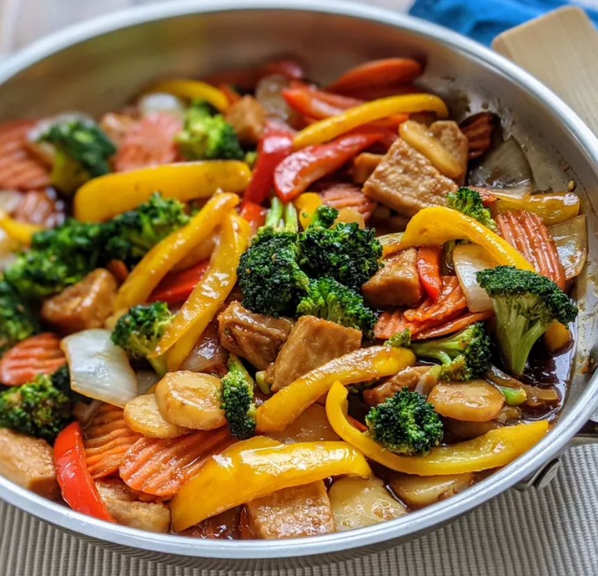

Chicken Stir-Fry

Description
This chicken stir-fry recipe is packed with veggies and is quick and easy to prepare. Try adding bean sprouts,
bamboo shoots, snap peas, or any of your favorite vegetables. Serve it with white or brown rice, or noodles.
Ingredients
- 4 cups water
- 2 cups white rice
- ⅔ cup soy sauce
- ¼ cup brown sugar
- 1 tablespoon cornstarch
- 1 tablespoon minced fresh ginger
- 1 tablespoon minced garlic
- ¼ teaspoon red pepper flakes
- 2 tablespoons sesame oil, divided
- 1 head broccoli, broken into florets
- 1 onion, cut into large chunks
- cup sliced carrots
- 1 (8 ounce) can sliced water chestnuts, drained
Steps
- Stir the soy sauce, sugar, cornstarch, and spices together.
- Add the chicken and toss. Cover and marinate.
- Cook the vegetables and water chestnuts in sesame oil.
- Cook the marinated chicken, then stir in the veggies and reserved marinade.
- Boil until the chicken is fully cooked. Serve over rice.
Return